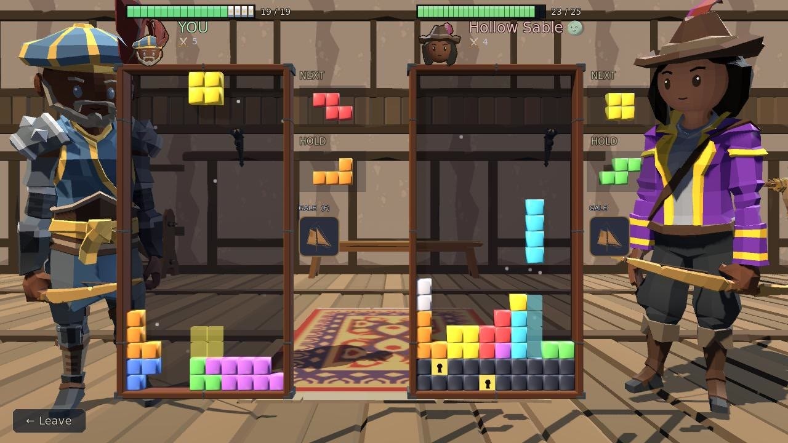
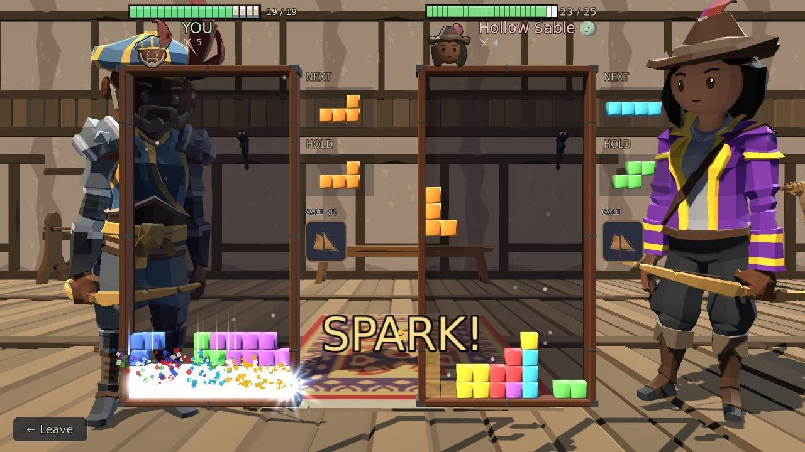
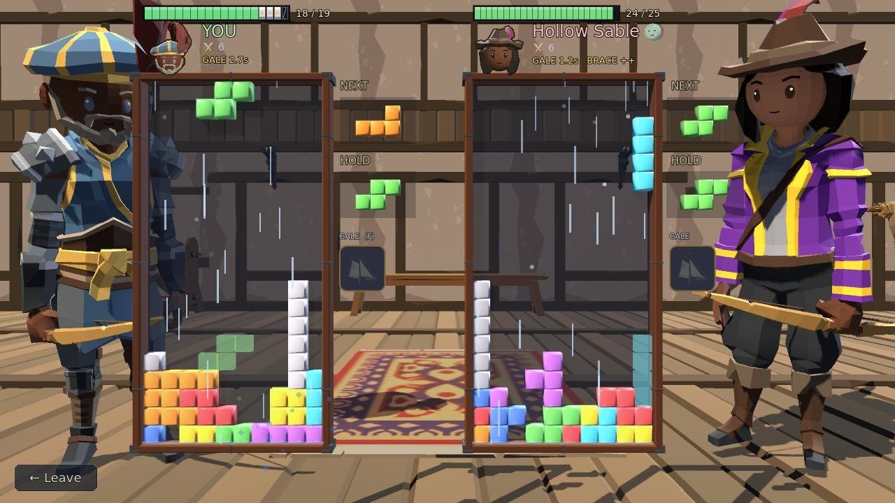
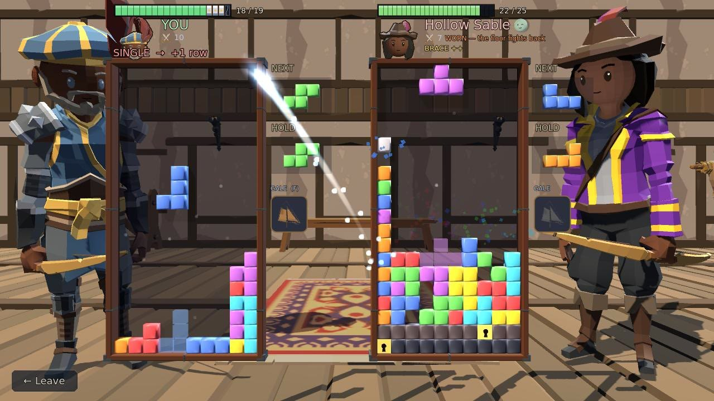
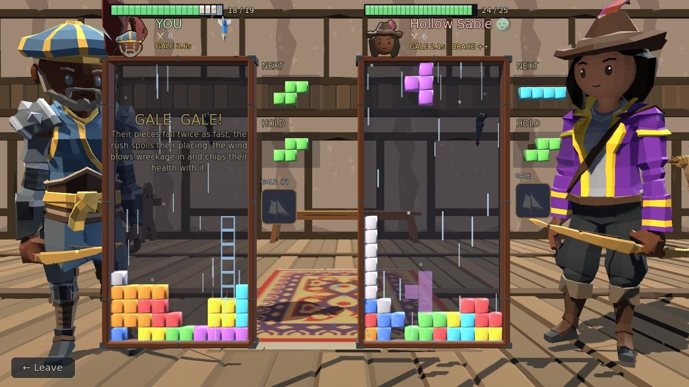

Skirmish
Falling blocks, head to head: clear lines to bury your opponent in garbage and steel until their board tops out.
Step by step
-

1Your piece2Where it lands3Next / Hold1Your piece2Where it lands3Next / Hold Step 1Play your pieces
Steer the falling piece with ← →, rotate with ↑ or Z, hold ↓ to drop it faster, and press Space to slam it down. The faint copy below shows where it will land, and Tab swaps it into your Hold box.
-

1A clear1A clear Step 2Clear lines to attack
Fill a row from wall to wall and it clears, sending garbage to your opponent; the word under your name says how many rows went over. Fill their board to the top to win.
-

1Garbage1Garbage Step 3Garbage clogs your stack
Their clears land on your board as grey garbage. It clogs your stack and can't be cleared until it ripens into coloured tiles, a couple of your drops later.
-

1Steel and keyholes2Worn1Steel and keyholes2Worn Step 4Blows raise steel
A volley of several rows that lands is a blow: it chips health and raises courses of unbreakable steel under the stack. Every line cleared above the floor chips the top course; faster, cover its gold keyhole and clear that line, and the whole course cracks off. The more worn a fighter is, the more clears each course takes. Damage never beats you on its own: you lose only by topping out.
-

1Signature move: F2What it does1Signature move: F2What it does Step 5Your signature move
Clearing lines fills the badge under your Hold box. When it glows gold, press F: your style decides what the move does, and the game spells it out over your board. A Gale makes their pieces fall twice as fast and chips their health. The foe has one too.
The rules, as the game tells them
- ← → : move the piece
- ↑ / Z : rotate
- ↓ : soft drop (hold)
- SPACE : HARD drop — it commits the piece
- TAB : HOLD / swap the piece
- F : your SIGNATURE MOVE, once its badge glows gold
Clear lines to send GARBAGE to your opponent. Fill their board to the top to win.
Incoming attacks land as inert grey blocks that clog your stack — they can't be cleared until they RIPEN into coloured tiles (after a couple of your drops).
You BOTH have an HP bar above your profile. A multi-row volley that lands is a BLOW: it chips HP *and* raises that many courses of unbreakable STEEL from the bottom of their board.
DIG BACK OUT: every line you clear above the floor CHIPS the top steel course, and enough chips break it off. FASTER — each course carries one gold KEYHOLE tile: cover it with a piece and clear the line it sits in, and that whole course cracks off in one go.
But the more WORN you are, the more clears each course takes — and at 0 HP you cannot dig at all, so the floor only ever rises. The line under your name says WORN when that starts costing you.
You never lose from HP alone. You lose ONLY by topping out — so damage does not kill you, it takes away your way back up.
THE MYSTIC IS THE HEALER: they knit HP back when they crack a course off their own floor, and their Mend restores more than anyone else's. Since a worn fighter digs worse, healing buys back both the damage AND the ability to dig out of it — the trade for having the weakest Strike on the ladder.
YOUR SIGNATURE MOVE: clearing lines fills the badge under your HOLD box. When it is full and glowing gold, press F to unleash it — your style decides what it does, and the foe has one too. It costs nothing but the clears you earned, so it is always available to both of you.
YOUR WEAPON matters here: Strike chips them harder, Guard means their blows chip you less, Armour is plates over your bar that break first, Tempo gives you more time to place each piece, and Venom keeps your garbage unclearable longer. A weapon swings a blow by about a third either way; it never sends more garbage, so it can shorten a fight you were winning and cannot win one for you. This is a friendly spar — no real HP is lost.
Word for word from the game: in play the same text sits behind the ? on the board, so this page cannot drift from it.